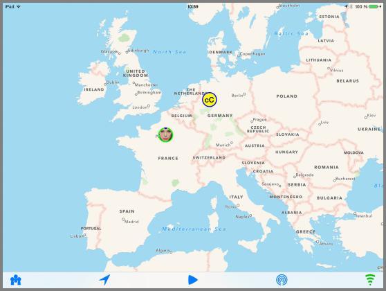

OwnTracks is an Open Source project which provides an iOS and an Android app with which your smartphone records its current location. While there are many smartphone apps available which can do that, we think OwnTracks is special.

Whether you want your young child to know where you currently are, or you want to keep track of where you spent your last vacation, or you and a group of friends want to see each other on a map, OwnTracks does that. It consists of an app which runs on your smart phone, and which periodically, publishes a small chunk of data which other OwnTracks users you authorize may see. The big deal here is which you authorize: we are extremely picky about the security features of OwnTracks.
From this point onwards, it gets a bit complicated, but we'll try and ease your way into the world of OwnTracks so you may enjoy it. If you are unsure of something, would like to chat to us or ask questions, join our community; please feel free to bring any questions or conversation relating to OwnTracks, its usage, or location awareness to that group.
We've made OwnTracks very easy to try out without you having to do very much: our Public mode gets you running right away for demonstration purposes. In Hosted mode, we provide a broker (server) for you after you sign up. And next to these two, the full power of OwnTracks is at your disposal if you want to personalize your setup.
We think the best way to get started using OwnTracks is to follow this guide, chapter by chapter, but you certainly may fast-forward or even skip sections you're familiar with. Pressing Next on each page will guide you (pun!) through the guide.
We'll now move on to explain what OwnTracks does and how it works.